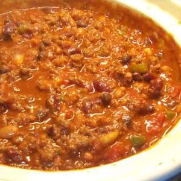

Chili

Description
Can be made on the stove or in the slow cooker. It's quick, easy and so good.
Ingredients
- 2 lbs ground beef
- 1 (46 fluid once) can tomato juice
- 1 (29 ounce) can tomato sauce
- 1 (15 ounce) can kidney beans, drained and rinsed
- 1 (15 ounce) can pinto beans, drained and rinsed
- 1 1/2 cups chopped onion
- 1/4 cup chopped green bell pepper
- 1/8 teaspoon ground cayenne pepper
- 1/2 teaspoon white sugar
- 1/2 teaspoon dried oregano
- 1/2 teaspoon ground black pepper
- 1 teaspoon salt
- 1 1/2 teaspoon ground cumin
- 1/4 cup chili powder
Steps
- Place ground beef in a large, deep skillet. Cook over medium-high heat until evenly brown. Drain, and crumble.
- In a large pot over high heat combine the ground beef, tomato juice, tomato sauce, kidney beans, pinto beans, onions, bell pepper, cayenne pepper, sugar, oregano, ground black pepper, salt, cumin and chili powder. Bring to a boil, then reduce heat to low. Simmer for 1 1/2 hours. (Note: If using a slow cooker, set on low, add ingredients, and cook for 8 to 10 hours.)